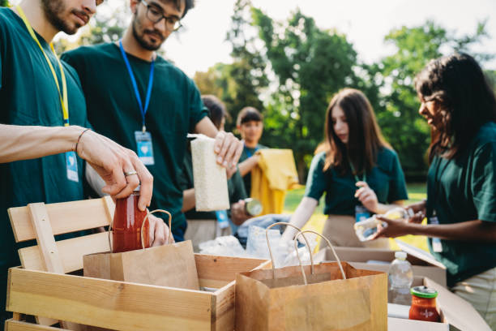
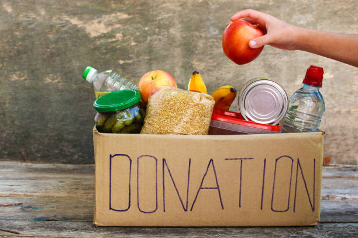
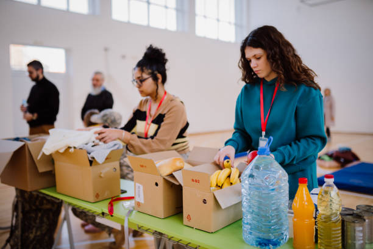

Food Donation in Action

Community members receiving donated meals with gratitude.

Grains, oils, and other food items are ready for distribution.

Volunteers organizing surplus food for local communities.

A variety of foods, including water, fruits, vegetables, and grains.

Volunteers organizing surplus food for local communities.

The smail and happiness of a hungry child receiving food.